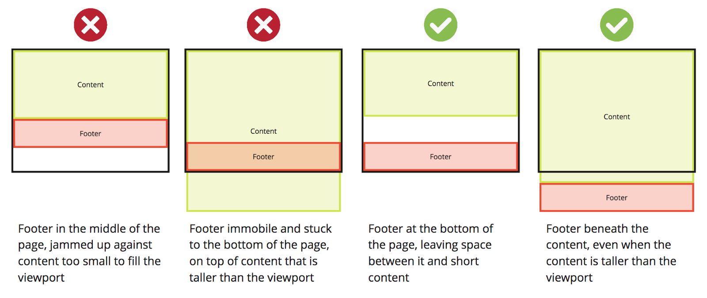

How to keep your footer where it belongs?

A footer is the last element on the page. At a minimum it is at the bottom of the viewport, or lower if the page content is taller than the viewport. Simple, right?
When working with dynamic content that includes a footer, a problem sometimes occurs where the content on a page is not enough to fill it. The footer, rather than staying at the bottom of the page where we would want it to stay, rises up and leaves a blank space beneath it.
For a quick fix, you can absolutely position the footer at the bottom of the page. But this comes with its own downside. If the content grows larger than the viewport, the footer will remain ‘stuck’ to the bottom of the viewport, whether we want it to or not.
Getting your footer under control index.html:

main.css:

So what is this doing?
-
The
page-containergoes around everything on the page, and sets its minimum height to 100% of the viewport height (vh). As it isrelative, its child elements can be set withabsoluteposition based on it later. -
The
content-wraphas a bottom padding that is the height of the footer, ensuring that exactly enough space is left for the footer inside the container they are both in. A wrappingdivis used here that would contain all other page content. -
The
footeris set toabsolute, sticking to thebottom: 0of thepage-containerit is within. This is important, as it is notabsoluteto the viewport, but will move down if thepage-containeris taller than the viewport. As stated, its height, arbitrarily set to2.5remhere, is used in thecontent-wrapabove it.